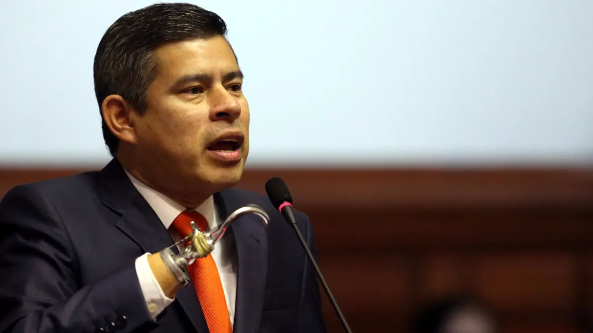
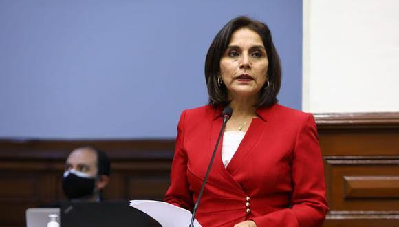
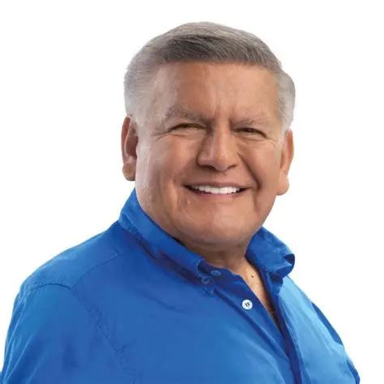
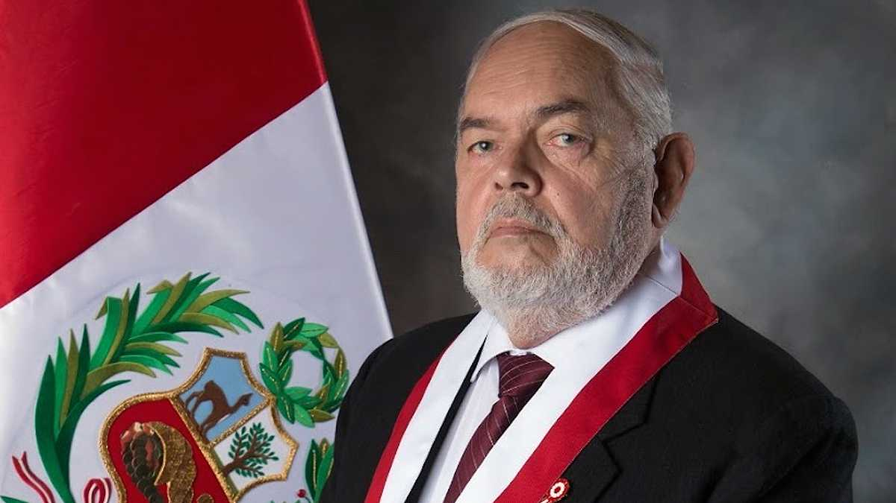
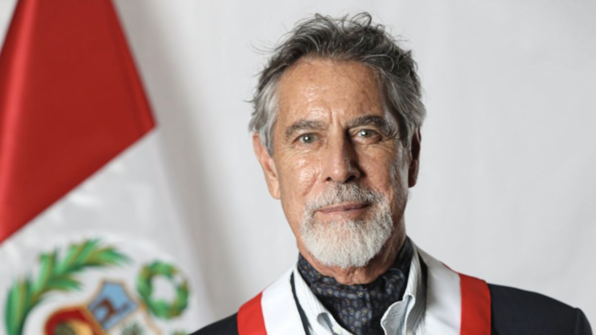
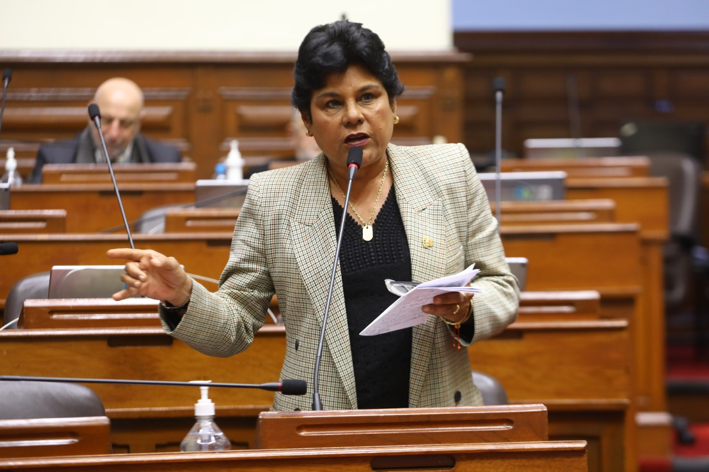
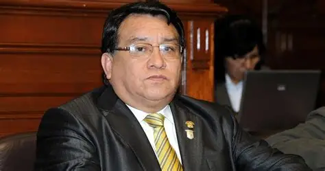
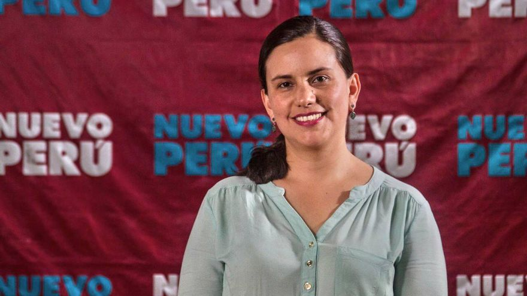
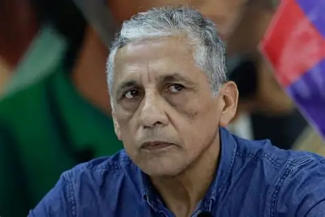

Pongo estos senadores ya que aún no salen los resultados oficiales en la ONPE por ahora, Por cierto no puse las imágenes en los senadores regionales ya que ocupan mucho espacio y no podía subrilo a un hosting.
| Nombres | Partido | FOTO | CV |
|---|---|---|---|
| Keiko Fujimori | Fuerza Popular | |
Líder de Fuerza Popular |
| Luis Galarreta | Fuerza Popular |  |
Ex Presidente del Congreso |
| Patricia Juárez | Fuerza Popular |  |
Congresista actual |
| César Acuña Peralta | Alianza para el Progreso |  |
Fundador de APP - Ex Gobernador La Libertad |
| Richard Acuña Núñez | Alianza para el Progreso | |
Hijo de César Acuña |
| Rafael López Aliaga | Renovación Popular | |
Alcalde de Lima (hasta 2025) |
| Jorge Montoya | Renovación Popular |  |
Ex Jefe del CCFFAA - Almirante (r) |
| Gladys Echaíz | Renovación Popular | Ex Ministra y congresista | |
| Francisco Sagasti | Partido Morado |  |
Expresidente de la República (confirmado) |
| Adriana Tudela | Avanza País | |
Congresista actual |
| Norma Yarrow | Avanza País |  |
Excongresista |
| José Luna Gálvez | Podemos Perú |  |
Líder de Podemos Perú |
| Verónika Mendoza | Nuevo Perú |  |
Líder de la izquierda |
| Antauro Humala | A.N.T.A.U.R.O. |  |
Sujeto a confirmación judicial |
| Escaños | Candidatos más probables | Observaciones | |
|---|---|---|---|
| Lima | Miguel Torres | Varios | |
| Lima | Edmer Trujillo | Varios | |
| Lima | Susel Paredes | Varios | |
| Arequipa | Rohel Sánchez | Ex Gobernador | |
| Arequipa | Ana Maria Choquehuanca | Varios | |
| La Libertad | Daniel Marcelo | Exalcalde de Trujillo | |
| La Libertad | Luis Valdez | Exgobernador de la Libertad | |
| Piura | Jhony Peralta | excongresista | |
| Piura | Reynaldo Hilbck | Varios | |
| Piura | Miguel Torres | Abogado | |
| Piura | Edmer Trujillo | Exministro de Vivienda y construcción | Piura | Susel Paredes | Abogada-Congresista |
| Cajamarca | Walter Benavides | Excongresista | |
| Cajamarca | Felicita Tocto | Excongresista | |
| Cusco | Jean Paul Benavente | Exgobernador de Cusco |